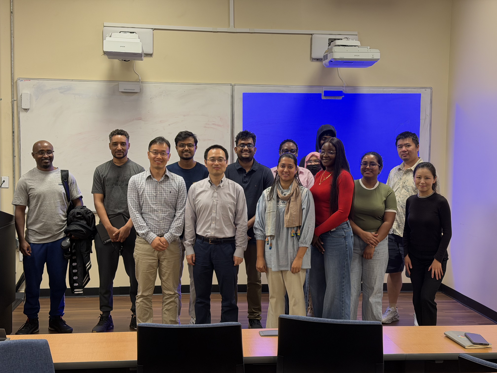
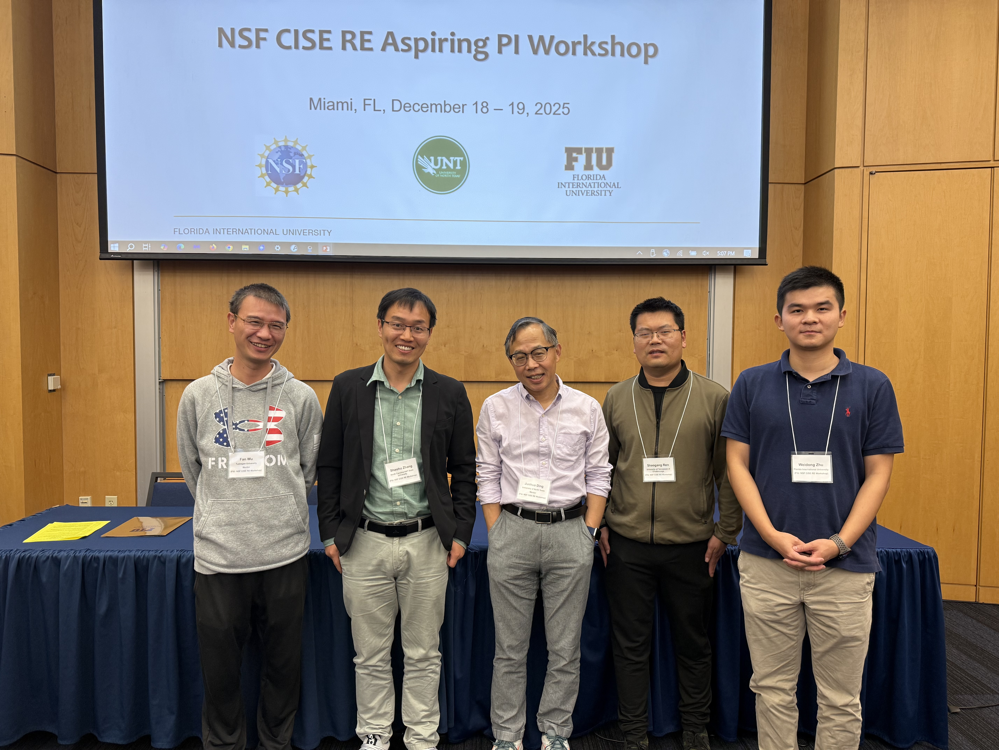
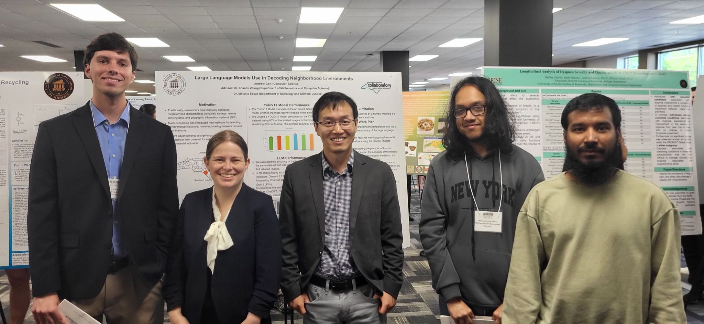
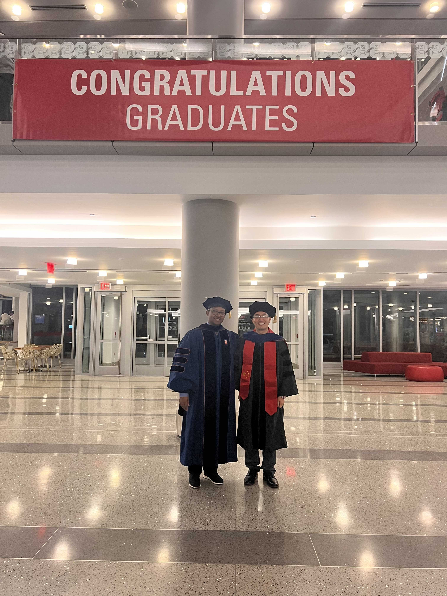
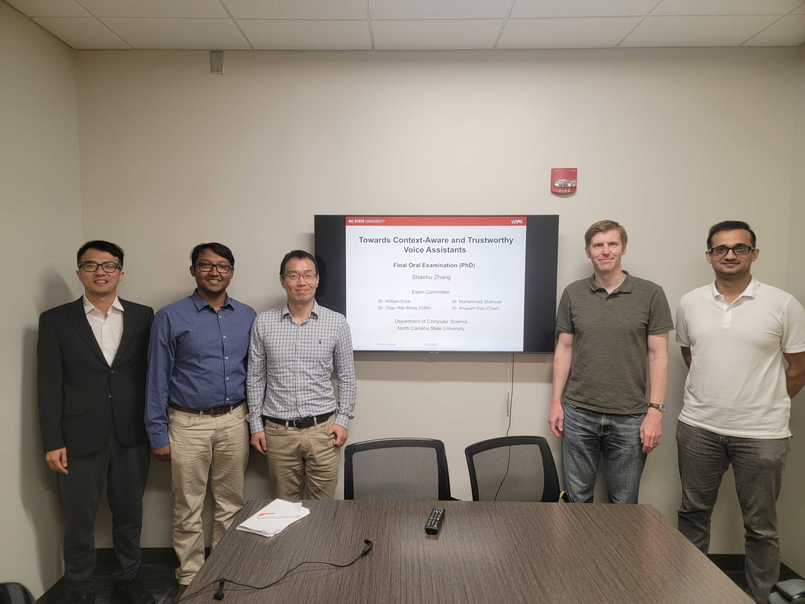
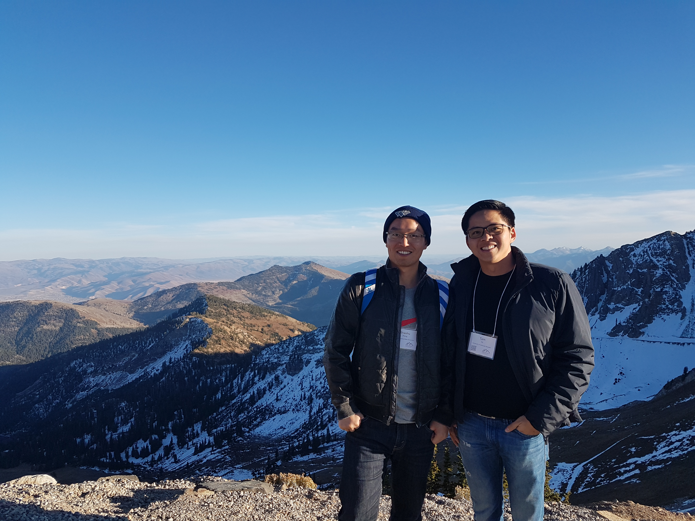
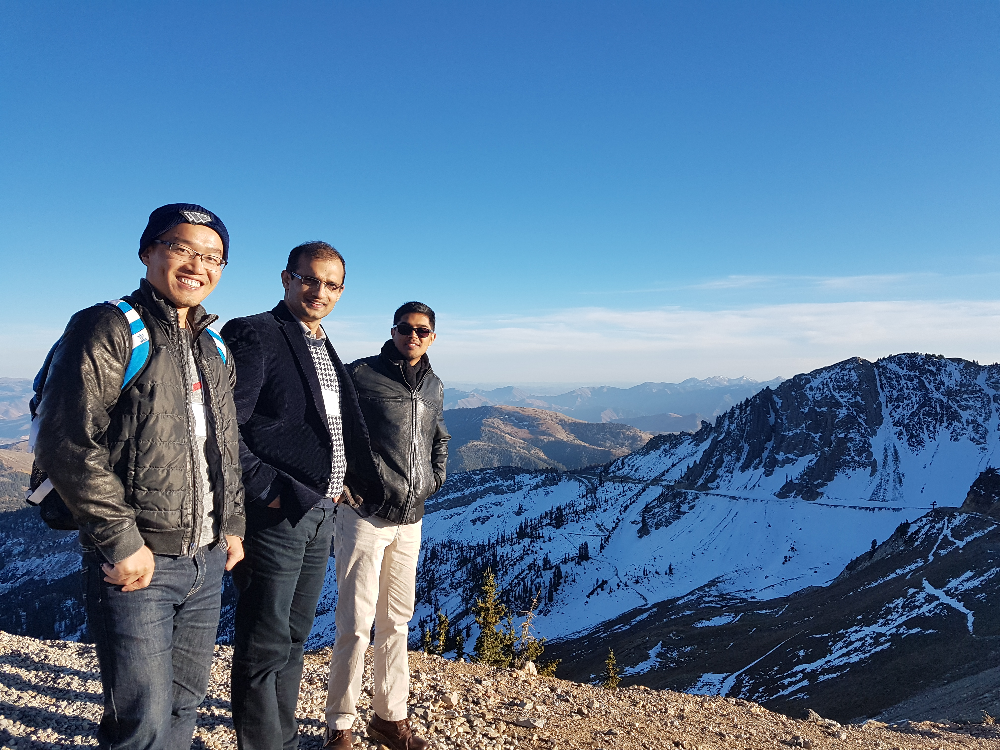
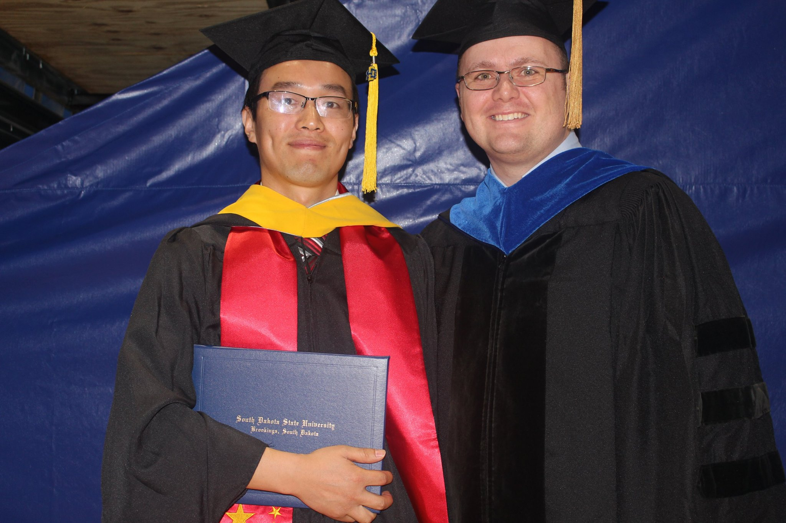
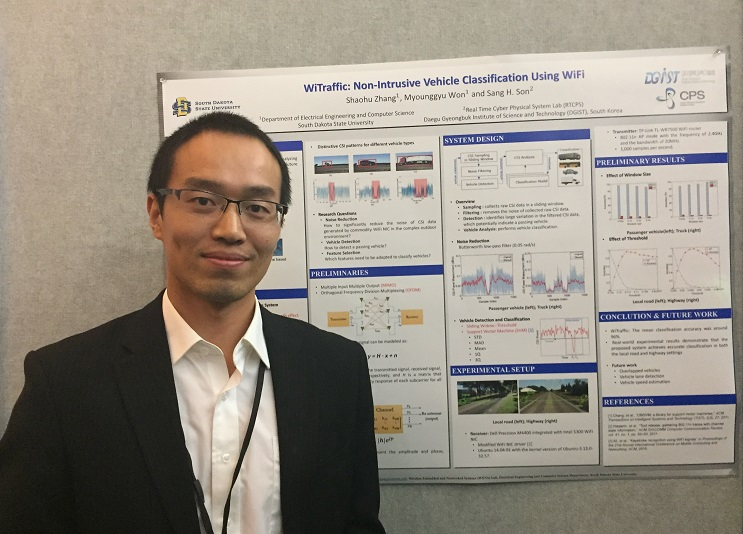
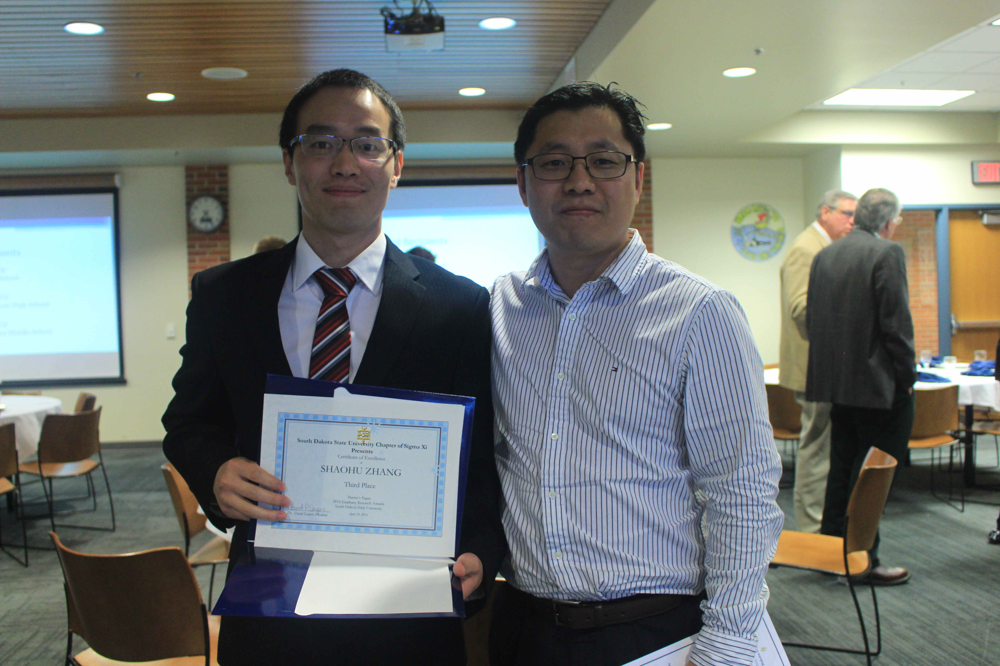

Beyond the papers
People, places & moments.
A few snapshots from research, conferences, and life along the way.


Prof. Lei Zhu visited NCA&T and gave COMP895 students a guest lecture.

Bontu presented our poster in DSN'26 held in UNC Charlotte


NSF CISE RE PI Aspiring Meeting at FIU.

A visit to Yale Quantum Institute (YQI).


My team at the Pembroke Undergraduate Research and Creativity Symposium.


Graduation ceremony with my advisor, Prof. Anupam Das.


Dissertation defended!


MobiCom 2017 in Snowbird, Utah, with Dr. Tam Vu from the University of Colorado Boulder.


MobiCom 2017 in Snowbird, Utah, with my advisor Dr. Shahzad (middle) and colleague Raghav (right).


Graduation ceremony with my advisor, Dr. Jonathan Wood.


Presenting my research at SenSys 2016, Stanford University.


Sigma Xi Banquet with my advisor, Dr. Myounggyu Won, at South Dakota State University.

Head